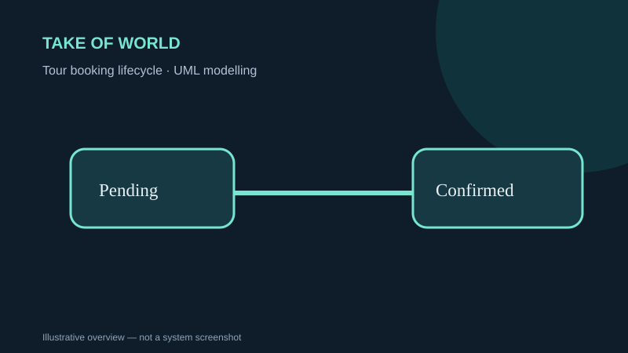

SYSTEMS ANALYSIS · UML
Take of World — Tour Management System
A tour-management project covering booking, payment, vendor coordination and software-design methods.
UMLAgileExtreme ProgrammingSystem design

Concept illustration · descriptive artwork, not a screenshot of the submitted system
OVERVIEW
What the project is about
A multi-person systems-development assignment proposed tour booking workflows, system analysis and a user-interface proof of concept.
MY DOCUMENTED WORK
My contribution
- Wrote sections on daily business/developer collaboration and sprint retrospectives.
- Researched and documented Extreme Programming (XP) practices.
- Prepared booking state-machine modelling and transition analysis.
METHODS & DELIVERABLES
Key work covered
- Requirements and workflow analysis
- Tour-booking state-machine model
- Agile and alternative methodology comparison
- Team prototype and deployment/testing discussion
EVIDENCE & SCOPE
What this portfolio does and does not claim
The materials document design and proof-of-concept screens, not a verified production website. Other group members' components are not attributed individually.